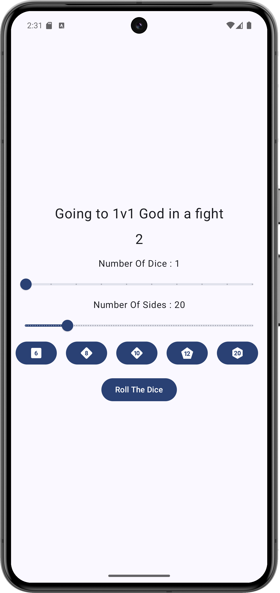
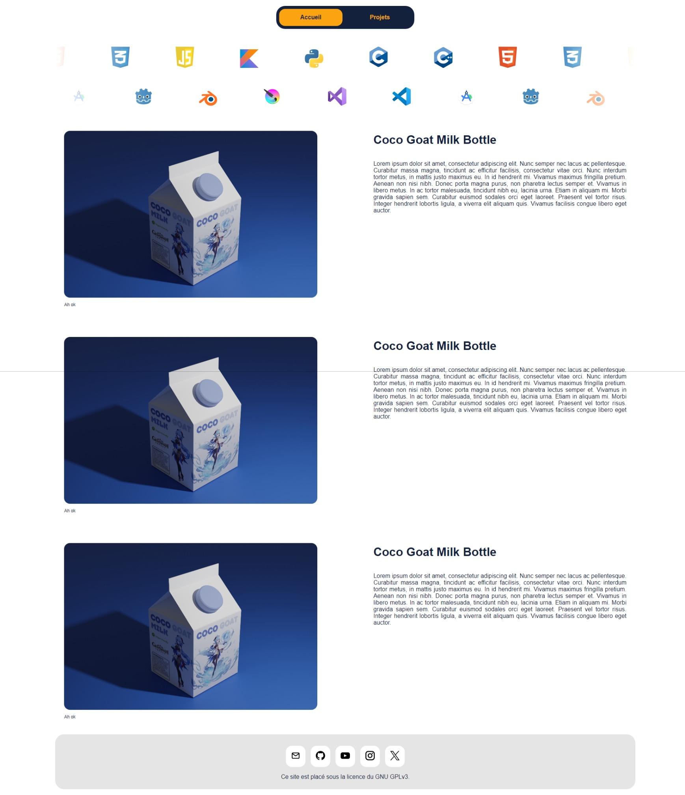
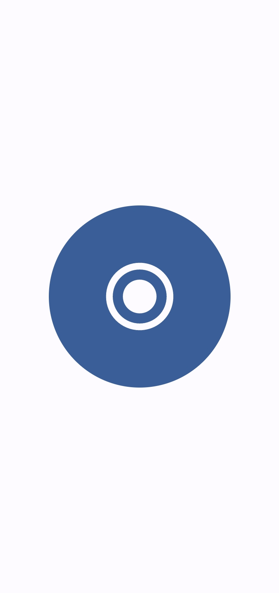
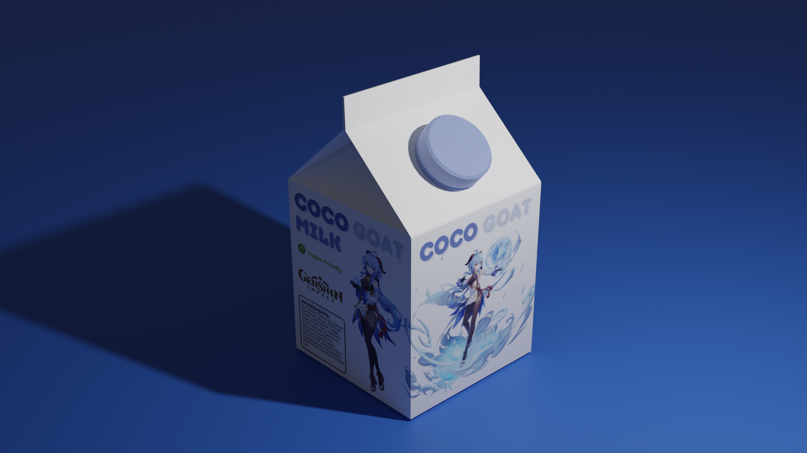
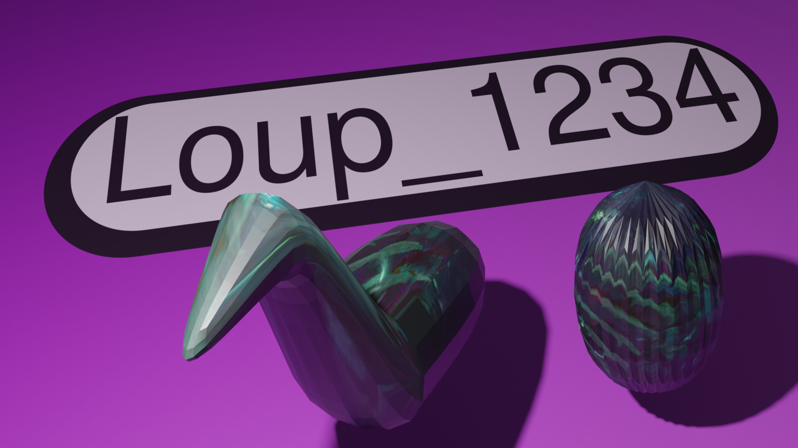
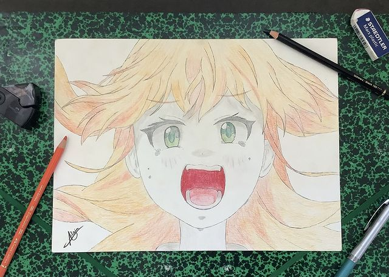
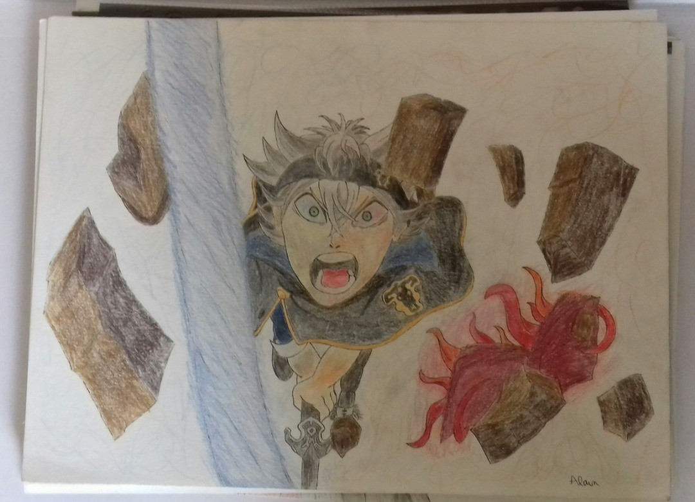
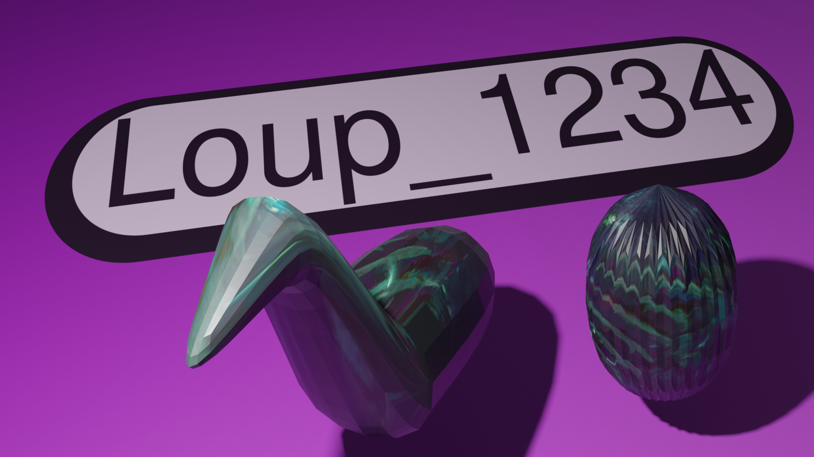
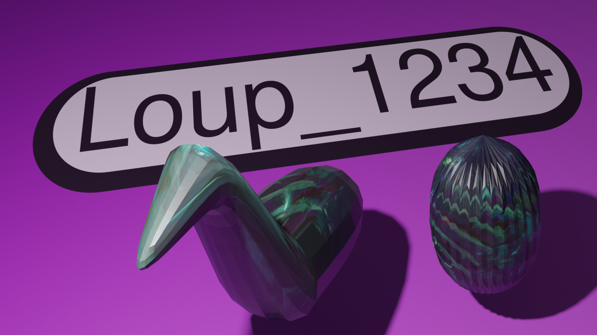

palette
Accueil
Projets
FR
EN
Projets GitHub
 Let's Go Gamblin
 Loup-1234.github.io
 Button
An Other Manga App
Projets Blender
 The Coco Goat Milk Bottle & The Coconut Song
Lumine「Miki Miki ★ Romantic Night」【Vocaloid MMD】
 Sans titre
Mes dessins
Eri
 Momosuzu Nene
Gawr Gura
 Asta
 An Other Manga App
An Other Manga App
 Lumine「Miki Miki ★ Romantic Night」【Vocaloid MMD】

Sans titre
Lumine「Miki Miki ★ Romantic Night」【Vocaloid MMD】

Sans titre
 Gawr Gura
Gawr Gura